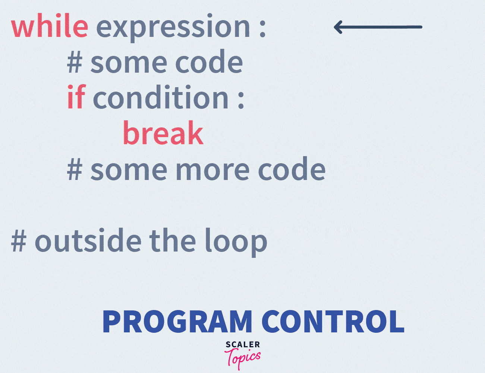
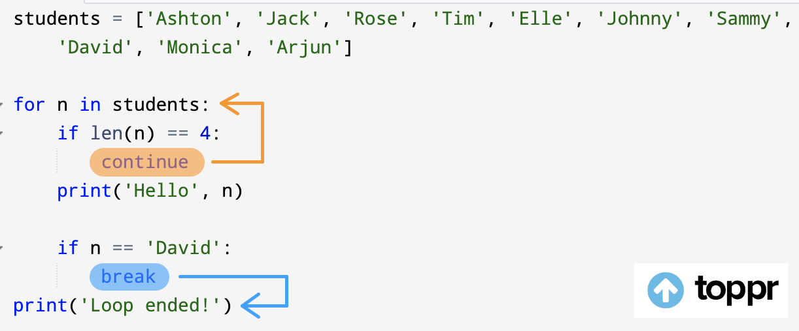
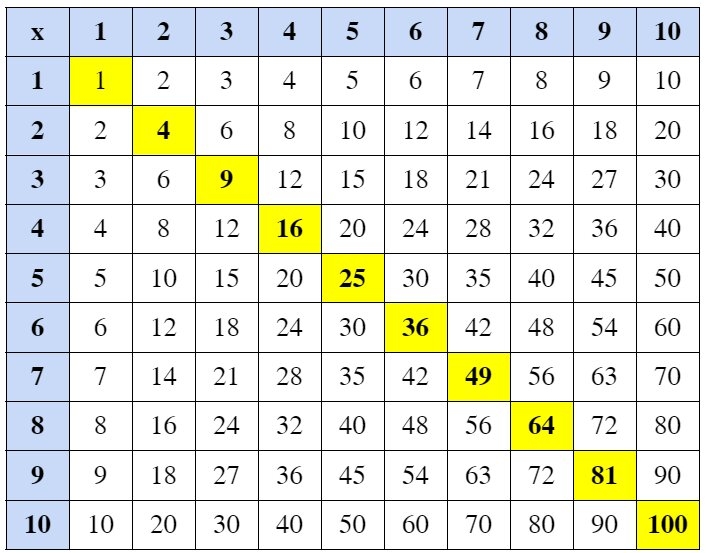

4. While Loop#
In this notebook, we cover the following subjects:
While Statement;
Break;
Continue.
4.1. The While Statement#
Thankfully, computers are good at repeating boring tasks, saving us from having to do them ourselves. Due to their computational power, they do this faster and more accurately than we can. When a block of code is executed several times, we referred to it as a loop. Each repetition of instructions within a loop is called an iteration.
One of the fundamental loop statements in Python is a while loop, which allows you to repeatedly execute the body of code within the while statement as long as the specified condition holds True.
while condition:
# Code to execute while condition is True
4.1.1. Structure of a while loop#
Bellow, you can see the standard components of a while loop.
Step 1: Initialize the loop by using the
whilekeyword.Step 2: Apart from the keyword, we need to add a condition like
a > betc.Step 3: We check if the condition is
TrueorFalse.:If the condition is
True, we excecute the body of the loop.If the condition is
False, we continue with the statement outside the loop.
Step 4 (only applicable if the condition was True): We excecute the body of the loop.
Step 5 (only applicable if the condition was True): We update the condition based on our logic.
Step 6 (only applicable if the condition was True): We check if the condition is still
Trueafter the update.You probably noticed that now we are back at step 3.
Step 7 (only applicable if the condition was False): We continue with the statements outside the loop.
x:int = 0
# steps 1 and 2 and 3 (and 6)
while x < 3:
# body of the loop -> step 4
# statements to be executed -> step 4
if x % 2 == 0:
print('even')
# updation -> step 5
x = x+1
# step 7
print('Structure of a while loop')
4.1.2. The flow of execution for a while statement#
The flow of execution for a while statement is as follows:
Determine whether the termination condition is
TrueorFalse;If
False, exit the while statement and continue with the next statement outside of the loop;If the condition is
True, run the body and go back to step 1.
This type of flow is called a loop because the third step loops back to the top. An animation could help us visualize the operation of a while loop.
Let’s look at a Harry Potter-themed example.
platform: int = 1
while platform < 10:
print("You are at Platform {platform_no}.".format(platform_no = platform))
platform = platform + 1
print("Be careful! Only 3/4 platforms to go.")
You are at Platform 1.
You are at Platform 2.
You are at Platform 3.
You are at Platform 4.
You are at Platform 5.
You are at Platform 6.
You are at Platform 7.
You are at Platform 8.
You are at Platform 9.
Be careful! Only 3/4 platforms to go.
How could we simplify platform = platform + 1 ?
We could use the += (Addition Assignment) operator, which does exactly the same as platform = platform + 1 but in 1 line.
Note
For further explanation about Addition Assignment, visit this website.
4.2. The Break Statement#
It’s possible to enforce the termination of a loop via the break statement. Once the break statement is reached within your program, none of the remaining code within the loop will be executed.
while True:
print('Print once!')
break
print("The rest won't be printed")
# print('But will this be printed?')
What will be the output of the above code snippet?
The code would print the Print once! message but not the The rest won’t be printed message. It won’t print the second message owing to the break statement.
# Try it for yourself
while True:
print('Print once!')
break
print("The rest won't be printed")
# print('But will this be printed?')
Print once!
What would be the output of the above code snippet if we uncommented the last line?
The code would print the Print once! message plus the But will this be printed? message since it is outside the loop (the break statement exits the loop, then the program executes the next line).
It would still not print the The rest won’t be printed message owing to the break statement.
# Try it for yourself
while True:
print('Print once!')
break
print("The rest won't be printed")
print('But will this be printed?')
Print once!
But will this be printed?
4.3. The Continue Statement#
Sometimes you want to finish the execution of the loop body for specific iterations. In that case, you want to stop the current iteration and continue with the next one. To do so, you can use the continue statement.
iteration: int = 0
while iteration <= 5:
iteration += 1
# Do not print anything in iteration 2
if iteration == 2:
continue
print('Skip this text!')
print(f'Iteration {iteration}')
Iteration 1
Iteration 3
Iteration 4
Iteration 5
Iteration 6
4.4. Infinite Loops#
When you start working with while loops, it is very likely that you will encounter an infinite loop sooner or later. Do not be scared if this happens, as getting stuck in an infinite loop is part of every begginer programmer’s journey!
So what is an infinite loop?
An infinite loop happens when a program keeps repeating forever without stopping. This usually happens if the condition for the loop never becomes false.
To exit from an infinite loop just simply interrupt the kernel.
# example of a code snippet that would create an infinite loop
while True: # this condition will always be True
print("This will run forever!")
Note
To avoid infinite loops, make sure:
Your loop has a condition that will eventually stop.
You update variables inside the loop to break it.
4.5. Exercises#
Let’s practice! Mind that each exercise is designed with multiple levels to help you progressively build your skills. Level 1 is the foundational level, designed to be straightforward so that everyone can successfully complete it. In Level 2, we step it up a notch, expecting you to use more complex concepts or combine them in new ways. Finally, in Level 3, we get closest to exam level questions, but we may use some concepts that are not covered in this notebook. However, in programming, you often encounter situations where you’re unsure how to proceed. Fortunately, you can often solve these problems by starting to work on them and figuring things out as you go. Practicing this skill is extremely helpful, so we highly recommend completing these exercises.
For each of the exercises, make sure to add type hints, and do not import any libraries unless specified otherwise.
4.5.1. Exercise 1#
Level 1: Write a Python program that uses a while loop to count from 1 to 10, but only prints the even numbers without using the continue statement.
Expected output:
2
4
6
8
10
# TODO.
Level 2: Write a Python program that prints all even numbers from 1 to 20, excluding those divisible by 3 and the ones that are perfect squares, using the continue statement.
Expected output:
2
8
10
14
20
# TODO.
Level 3: Implement the same code as in Level 2, but this time do not use the modulo (%) operator.
Expected output:
2
8
10
14
20
# TODO.
4.5.2. Exercise 2#
Level 1: A well-known exercise to practice while loops is the “99 Bottles of Beer” song. Write a program using a while loop that prints the lyrics of the song, counting down from 99 bottles to 0. The program should include the final verse, handling the special case where there are no bottles left. Be sure to avoid repetitive code in your solution. The song starts with “99 bottles of beer on the wall” and decreases by one bottle each verse until there are no bottles remaining. Additionally, pay attention to the correct usage of singular and plural forms for “bottle” and “bottles”.
Expected output:
99 bottles of beer on the wall,
99 bottles of beer.
Take one down, pass it around,
98 bottles of beer on the wall.
98 bottles of beer on the wall,
98 bottles of beer.
Take one down, pass it around,
97 bottles of beer on the wall.
...
2 bottles of beer on the wall,
2 bottles of beer.
Take one down, pass it around,
1 bottle of beer on the wall.
1 bottle of beer on the wall,
1 bottle of beer.
Take one down, pass it around,
No more bottles of beer on the wall.
# TODO.
Level 2: Modify the program to allow users to start with a custom number of bottles and choose their preferred liquid. This will replace every instance of “beer” with the user-provided input, such as “Coca Cola”.
# TODO.
Level 3: Modify the program such that:
1) it adds a special verse for every 10th bottle (e.g., 90th, 80th, etc.) saying: ”Cheers! Take a break at bottle X!” where X is the bottle number.
2) if the current bottle number is divisible by both 5 and 3, instead of the regular verse, print: ”FizzBuzz! Celebrate bottle X!”
3) skip printing verses for any prime number of bottles. (hint: use your function from the Conditionals Notebook - Exercise 1.3)
# TODO.
4.5.3. Exercise 3#
The Collatz sequence, also known as the 3x + 1 problem, is a well-known problem in mathematics. The sequence follows a specific set of rules: starting with any positive integer, if the number is even, you divide it by 2; if it’s odd, you multiply it by 3 and add 1. You continue applying these rules until the sequence reaches the number 1. Strangely, when you apply these rules, you always end up in the loop of 4, 2, and 1—at least, this has been the case for all numbers tested so far—something that mathematicians still don’t fully understand or have been able to prove for all possible starting numbers.
Level 1: In this Python exercise, you will create a program to generate and display the Collatz sequence for a given starting number. You continue applying these rules until the sequence reaches the number 1. Your task is to implement a while loop to calculate the sequence and break the loop if it reaches 50 steps. This means that if the sequence does not reach 1 within 50 steps, the loop should terminate to prevent long-running computations and possible infinite loops (test this with the number 27 as this takes 111 steps to terminate). If you have to break add the print message:
"Argh, it costs too much computation power!".
Example input:
start_number: int = 7
Example output:
7
22
11
34
17
52
26
13
40
20
10
5
16
8
4
2
1
# Prompt the user to enter a positive integer as the starting number
start_number: int = int(input("Enter a positive integer as the starting number: "))
# Initialize a count to keep track of the number of terms in the sequence
count: int = 0
# TODO.
---------------------------------------------------------------------------
StdinNotImplementedError Traceback (most recent call last)
Cell In[11], line 2
1 # Prompt the user to enter a positive integer as the starting number
----> 2 start_number: int = int(input("Enter a positive integer as the starting number: "))
4 # Initialize a count to keep track of the number of terms in the sequence
5 count: int = 0
File /opt/hostedtoolcache/Python/3.8.18/x64/lib/python3.8/site-packages/ipykernel/kernelbase.py:1281, in Kernel.raw_input(self, prompt)
1279 if not self._allow_stdin:
1280 msg = "raw_input was called, but this frontend does not support input requests."
-> 1281 raise StdinNotImplementedError(msg)
1282 return self._input_request(
1283 str(prompt),
1284 self._parent_ident["shell"],
1285 self.get_parent("shell"),
1286 password=False,
1287 )
StdinNotImplementedError: raw_input was called, but this frontend does not support input requests.
Level 2: Speaking of sequences, in mathematics, we explore patterns, and these patterns can be great for practicing programming. One such beautiful pattern is the Fibonacci sequence, which is perfect for practicing with while loops. In this sequence each number is the sum of the two numbers that came before it. It typically starts with 0 and 1, and continues indefinitely:
0, 1, 1, 2, 3, 5, 8, 13, 21, 34, 55...
Task: You might already guess what we’re expecting from you. We want you to write a program that prints the Fibonacci numbers up to a certain limit. This limit is determined by prompting the user (using input()), so you won’t know it in advance. Make sure to use a while loop in your script.
Example input:
limit: int = 15
Example Output:
0
1
1
2
3
5
8
13
# TODO.
Level 3: Modify the program from Level 1 to:
1) track and display the highest number encountered in the Collatz sequence
2) track and display the iteration number at which it occurs
3) calculate and display the average of all numbers in the sequence.
For testing purposes: for the starting number 7, the maximum number encountered should be 52 (at iteration 6), and the average of all numbers in the sequence should be approximately 16.94.
# TODO.
Material for the VU Amsterdam course “Introduction to Python Programming” for BSc Artificial Intelligence students. These notebooks are created using the following sources:
Learning Python by Doing: This book, developed by teachers of TU/e Eindhoven and VU Amsterdam, is the main source for the course materials. Code snippets or text explanations from the book may be used in the notebooks, sometimes with slight adjustments.